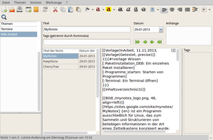

MyNotex
Dieser Artikel wurde für die folgenden Ubuntu-Versionen getestet:
Ubuntu 16.04 Xenial Xerus
Ubuntu 14.04 Trusty Tahr
Zum Verständnis dieses Artikels sind folgende Seiten hilfreich:
MyNotex  ist ein Programm ausschließlich für Linux, das zum Sammeln und Strukturieren von beliebigen Informationen in der Art eines Zettelkastens konzipiert wurde. MyNotex wurde entwickelt, um eine große Anzahl von Notizen zu verwalten. Diese werden intern mit Hilfe einer SQLite-Datenbank verwaltet bzw. gespeichert. Entwickelt wurde das Programm mit der Programmiersprache Pascal bzw. Lazarus.
ist ein Programm ausschließlich für Linux, das zum Sammeln und Strukturieren von beliebigen Informationen in der Art eines Zettelkastens konzipiert wurde. MyNotex wurde entwickelt, um eine große Anzahl von Notizen zu verwalten. Diese werden intern mit Hilfe einer SQLite-Datenbank verwaltet bzw. gespeichert. Entwickelt wurde das Programm mit der Programmiersprache Pascal bzw. Lazarus.
Funktionen:

Verschlüsselung des Textes der ausgewählten Notizen mit AES
Vergrößern bzw. Verkleinern der Notiztexte je nach Bedarf
Checkbox-Symbole, um Listen mit „erledigten Aufgaben“ zu verwalten
Öffnen der aktuellen Notiz mit der Textverarbeitung von LibreOffice oder Apache OpenOffice
Kopieren des Notiztextes ins LaTeX-Format, um ihn in einem LaTeX-Editor einzufügen
Verschieben einer Notiz mit allen zugehörigen Anhängen von einem Thema zu einem anderen
Integrierte Suche in Themen, Notizen, Anhängen und Schlagwörtern (Tags)
Schlagwortliste, um diese in eine neue Notiz oder mit Doppelklick in die Suchfelder einzufügen
Anlagen im Form von Dateien beliebiger Art
Direktimport von LibreOffice- oder Apache OpenOffice-Textdokumenten
Export ins HTML-Format
Import und Export eines einzelnen Themas mit zugehörigen Notizen und Anhängen von oder in eine andere MyNotex-Datenbank
Senden des Notiztextes als E-Mail mit dem Standard-E-Mail-Programm
Datenabgleich über Cloud-Dienste
Installation¶
 Das Programm ist nicht in den offiziellen Paketquellen enthalten.
Das Programm ist nicht in den offiziellen Paketquellen enthalten.
Fremdpaket¶
Über die Projektseite wird ein Fremdpaket  im .deb-Format angeboten, das heruntergeladen und manuell installiert [1] werden muss. Als Programmordner wird /opt/mynotex/ verwendet.
im .deb-Format angeboten, das heruntergeladen und manuell installiert [1] werden muss. Als Programmordner wird /opt/mynotex/ verwendet.
Auch GetDeb stellt ein Fremdpaket zur Verfügung.
Hinweis!
Fremdpakete können das System gefährden.
Verwendung¶
Bei Ubuntu-Varianten mit einem Anwendungsmenü erfolgt der Start [2] über den Menü-Eintrag "Büro -> MyNotex". Ansonsten gibt man einfach den Programmnamen in der Dash ein. Unter Unity besteht zusätzlich die Möglichkeit, beim Programmstart automatisch die zuletzt verwendete Datei zu öffnen. Benötigt man diese Option unter einer anderen Desktop-Umgebung, ergänzt man den Startbefehl um die Option "-l" (kleines L) [3]:
/opt/mynotex/mynotex -l
Da eine ausführliche deutsche Dokumentation  im PDF-Format vorliegt, die Beschreibung zur Verwendung hier nur in aller Kürze. Als erstes wählt man über "Datei -> Neu..." den Namen der zu verwendenden Datenbank aus. In der linken Randspalte ist bereits ein Thema vorgegeben, das man nur via Doppelklick
im PDF-Format vorliegt, die Beschreibung zur Verwendung hier nur in aller Kürze. Als erstes wählt man über "Datei -> Neu..." den Namen der zu verwendenden Datenbank aus. In der linken Randspalte ist bereits ein Thema vorgegeben, das man nur via Doppelklick  auswählen und entsprechend benennen muss. Notizen werden dann Themen zugeordnet und bestehen aus einem Titel, einem Datum, einer Tagliste (Schlagwörter) und einem Text von unbeschränkter Länge. Weitere Notizen können über "Notizen -> Neu" hinzugefügt werden. Anschließend kann der Text nach Belieben formatiert werden, wobei das Programm fast alle bei der Textverarbeitung üblichen Formatierungen abdeckt. Weitere Informationen zu den anderen Funktionen sind dem Handbuch zu entnehmen, das auch lokal über "? -> Benutzerhandbuch" abgerufen werden kann und im voreingestellten PDF-Betrachter geöffnet wird.
auswählen und entsprechend benennen muss. Notizen werden dann Themen zugeordnet und bestehen aus einem Titel, einem Datum, einer Tagliste (Schlagwörter) und einem Text von unbeschränkter Länge. Weitere Notizen können über "Notizen -> Neu" hinzugefügt werden. Anschließend kann der Text nach Belieben formatiert werden, wobei das Programm fast alle bei der Textverarbeitung üblichen Formatierungen abdeckt. Weitere Informationen zu den anderen Funktionen sind dem Handbuch zu entnehmen, das auch lokal über "? -> Benutzerhandbuch" abgerufen werden kann und im voreingestellten PDF-Betrachter geöffnet wird.
MyNotex-Datenbanken werden mit der Endung .mnt versehen. Wer diese Datenbanken ohne MyNotex begutachten möchte, dem sei der SQLite Database Browser empfohlen.
Anhänge¶
Dateien beliebiger Art (z.B. Bilder, Protokolle oder Messwerte) werden vom Programm automatisch verwaltet und sind in der Anzahl nur durch den verfügbaren Speicherplatz begrenzt. Sie werden in einem gleichnamigen Ordner im Pfad der aktuell geöffneten MyNotex-Datei komprimiert gespeichert. Beispiel: Anhänge der Datenbank ~/Dokumente/mynotex.mnt sind in der Datei ~/Dokumente/mynotex/xyz-mynotex.zip zu finden (statt xyz wird eine eindeutige, 36-stellige Bezeichnung genutzt).
Datenabgleich¶
Um MyNotex-Datenbanken und ihre Anhänge über Cloud-Dienste zu synchronisieren, wird der Speicherort entweder in der jeweiligen Client-Anwendung konfiguriert und man benutzt als Speicherort den zur Synchronisation vorgesehenen Ordner.
Einstellungen¶
 Ein klassisches Einstellungsmenü ist nicht vorhanden. Diverse Optionen wie beispielsweise die Auswahl der bevorzugten Sprache, die Verwendung eines Programmsymbols im Benachrichtigungsfeld, die Hintergrundfarbe, die Standard-Schriftgröße usw. sind über verschiedene Menüpunkte verstreut. Die Konfiguration wird im Einstellungsordner ~/.config/mynotex/ im Homeverzeichnis gespeichert.
Ein klassisches Einstellungsmenü ist nicht vorhanden. Diverse Optionen wie beispielsweise die Auswahl der bevorzugten Sprache, die Verwendung eines Programmsymbols im Benachrichtigungsfeld, die Hintergrundfarbe, die Standard-Schriftgröße usw. sind über verschiedene Menüpunkte verstreut. Die Konfiguration wird im Einstellungsordner ~/.config/mynotex/ im Homeverzeichnis gespeichert.
Links¶
Manual

 - Dokumentation (PDF-Format)
- Dokumentation (PDF-Format)
MyNotex: Notizverwaltung für Linux mit vielen Funktionen
- heise Open Source, 07/2013MyNotex - Zettelkasten der Extraklasse
- Blogbeitrag, 03/2012Notizen
 Übersichtsartikel
Übersichtsartikel
- Erstellt mit Inyoka
-
 2004 – 2017 ubuntuusers.de • Einige Rechte vorbehalten
2004 – 2017 ubuntuusers.de • Einige Rechte vorbehalten
Lizenz • Kontakt • Datenschutz • Impressum • Serverstatus -
Serverhousing gespendet von